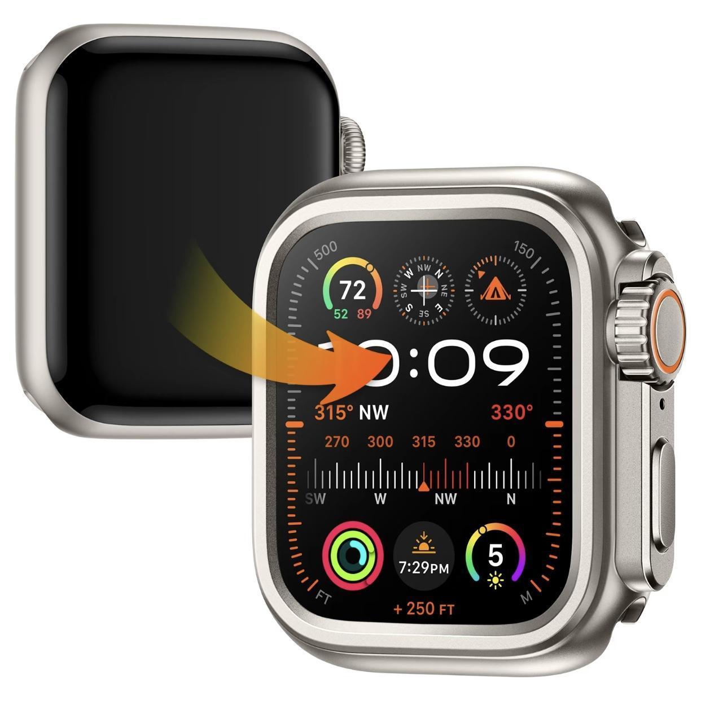
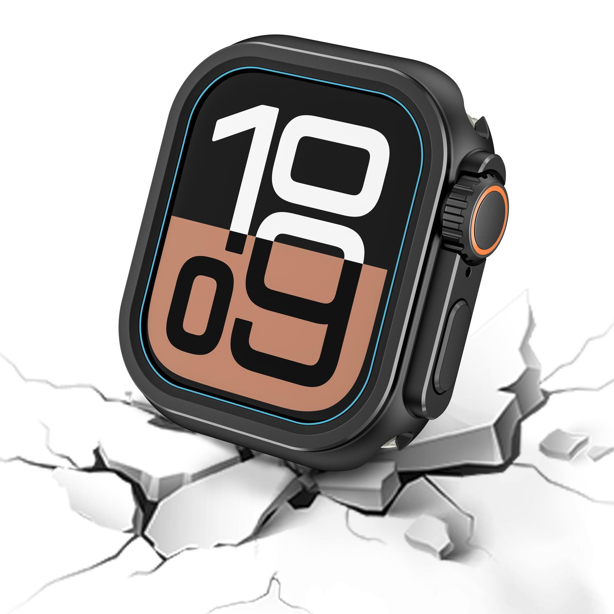
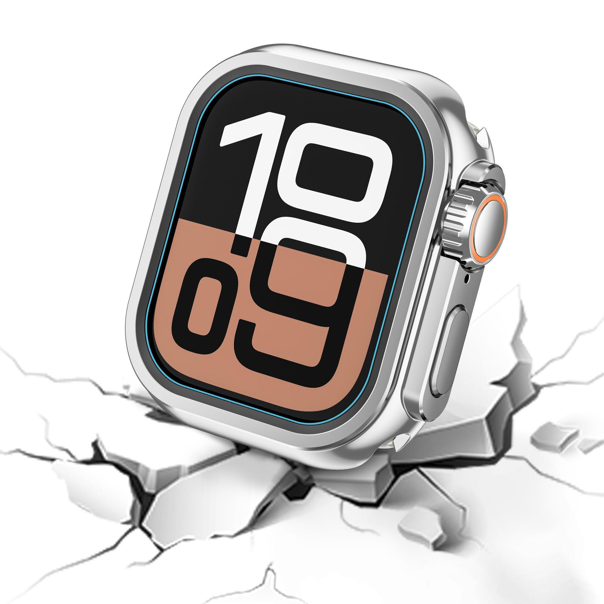
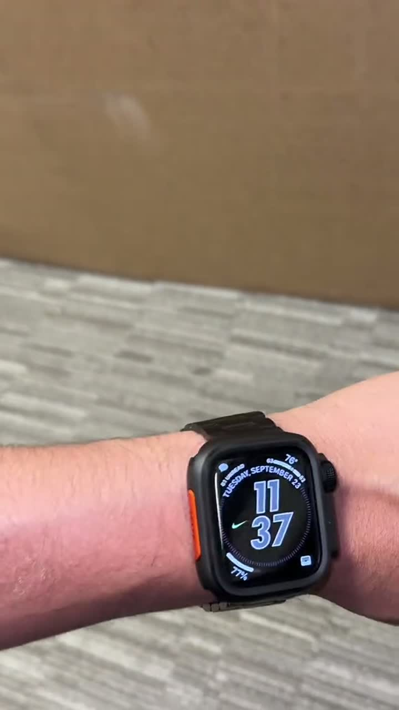
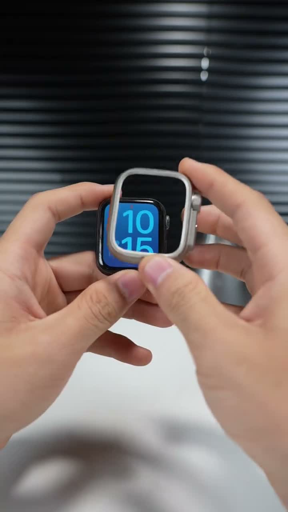
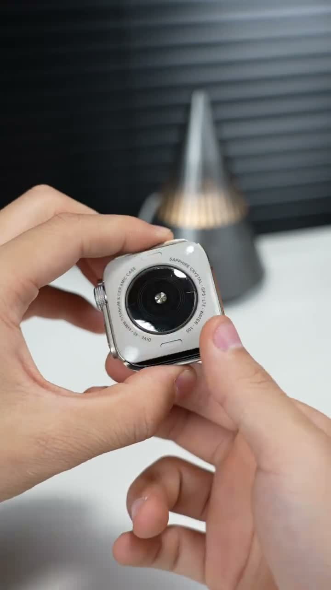
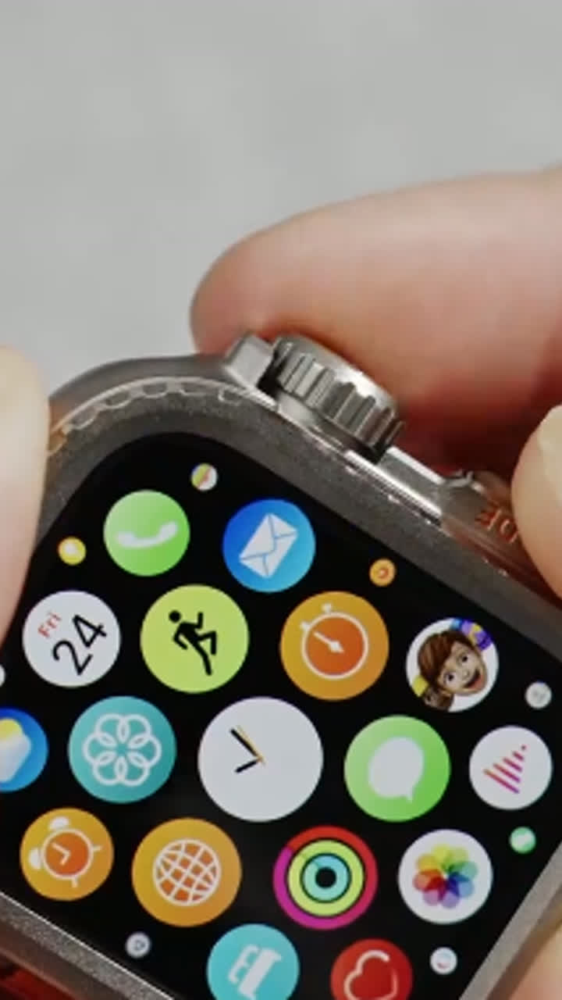

达人合作拍摄说明
把普通 Apple Watch 变成硬朗 Ultra 风
先展示肉眼可见的外观变化，再证明装壳后屏幕、表冠和侧边按键仍可正常操作。



核心卖点
一句话定位：不用换新表，让普通 Apple Watch 拥有更硬朗的 Ultra-style 金属外观。
核心卖点
瞬间升级外观（除了49mm型号的表壳）普通手表也能拥有更硬朗、更厚重、更接近 Ultra-style 的装备感。
减少磕碰焦虑金属边框和背盖帮助保护表身边缘、背部与表冠区域，减少日常使用顾虑。
辅助卖点
金属装备质感轮廓更机械、更有分量感，比普通软壳更适合运动、通勤和户外风格。
不用换新表保留现有 Apple Watch，用一个表壳获得明显视觉升级。
前三秒怎么拍
成品效果必须立即出现；先用画面证明变化，再讲型号和参数。
1. 先给最终效果用佩戴成品开场，先让观众看到外观变化，再讲型号和参数。

2. 制造前后对比普通表和装壳后并排同框，角度保持一致，让变化一眼可见。

3. 拍出安装爽点近距离展示手表放入表壳并扣合的瞬间，动作干净、紧凑、有满足感。

4. 滚轮正常滚动近距离旋转表冠，展示滚动顺滑、不被表壳挡住，减少用户对日常操作的顾虑。

视频内容制作顺序
建立完整转化链路：先让用户看到变化，再证明好装、有质感、不影响使用，最后用尺寸提醒推动点击。
变身钩子
核心表达先展示佩戴后的硬朗效果，用一句话告诉用户：普通表也能拥有 Ultra-style 外观。
前后对比
核心表达普通表和装壳后保持同角度展示，让外观变化一眼可见。
安装证明
核心表达拍清楚前框、背盖、卡扣闭合过程，证明安装简单、不复杂。
金属细节
核心表达展示表冠保护、侧面厚度、背盖结构和金属反光，强化装备感。
功能验证
核心表达点亮屏幕、滑动触控、旋转表冠、按侧边按钮，并展示充电不需要拆壳。
佩戴转化
核心表达上手腕展示通勤、健身或户外场景，最后提醒选择 44/45/46/49mm，并说明 case only。
用词限制
可以说
- compatible with Apple Watch
- smart watch case
不要说
- This is an Apple watch case
达人交付清单
制作一条以前后变化为核心的竖屏转化视频。手表始终保持清晰，并在CTA前明确尺寸选择和“仅含表壳”。
9:16竖屏0–2秒出现成品安装镜头表冠与触控验证上手效果尺寸提醒仅含表壳说明